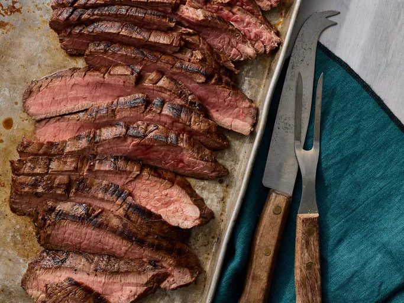

Flank Steak
Home

This flank steak recipe is a flavorful and tender dish that is perfect for grilling or broiling. The steak is marinated in a mixture of soy sauce, garlic, and herbs, then cooked to perfection. Serve it sliced thinly with your favorite sides for a delicious meal!
Ingredients:
- 1 1/2 pounds flank steak
- 1/4 cup soy sauce
- 2 tablespoons olive oil
- 2 cloves garlic, minced
- 1 tablespoon brown sugar
- 1 teaspoon ground black pepper
- 1 teaspoon dried oregano
- 1 teaspoon dried thyme
- 1 teaspoon red pepper flakes (optional)
- Salt to taste
Instructions:
- Step 1: In a small bowl, whisk together the soy sauce, olive oil, minced garlic, brown sugar, black pepper, oregano, thyme, red pepper flakes (if using), and salt.
- Step 2: Place the flank steak in a resealable plastic bag or shallow dish. Pour the marinade over the steak, ensuring it is well coated. Seal the bag or cover the dish and refrigerate for at least 1 hour, or overnight for best results.
- Step 3: Preheat the grill or broiler to high heat.
- Step 4: Remove the steak from the marinade and discard the marinade. Pat the steak dry with paper towels.
- Step 5: Grill or broil the steak for about 5-7 minutes per side, or until it reaches your desired level of doneness (medium-rare is recommended for flank steak).
- Step 6: Remove the steak from the heat and let it rest for 5-10 minutes before slicing.
- Step 7: Slice the steak thinly against the grain and serve with your favorite sides.